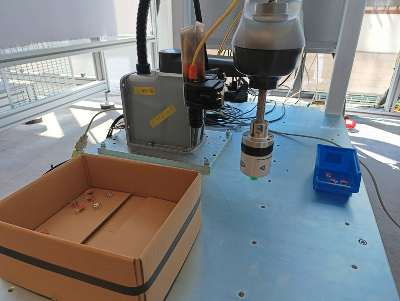

PhD thesis: the anchoring problem in robotic kitting
“Dealing with the Anchoring Problem in Robotic Kitting using Behavior Trees”, supervised by René Alquézar and Joan Aranda. Kitting means picking different parts from containers and grouping them into kits for a flexible machine. To cope with new parts and tasks, a robot has to link its symbolic actions, such as find-part, to low-level instructions, such as move-arm-to.
I proposed GP-CBT, an algorithm that combines genetic programming with conditional behavior trees to learn those links automatically, under the supervision of an operator who can add task requirements. Knowledge from tasks already learned speeds up new ones. The behavior trees were learned on an environment based on ARIAC 2018 and then executed on two real Omron robots, the i4L-350 and the TM5-900, showing that they can be transferred between robots.
PhD thesis · Article in Applied Intelligence, vol. 55, Springer (2025)